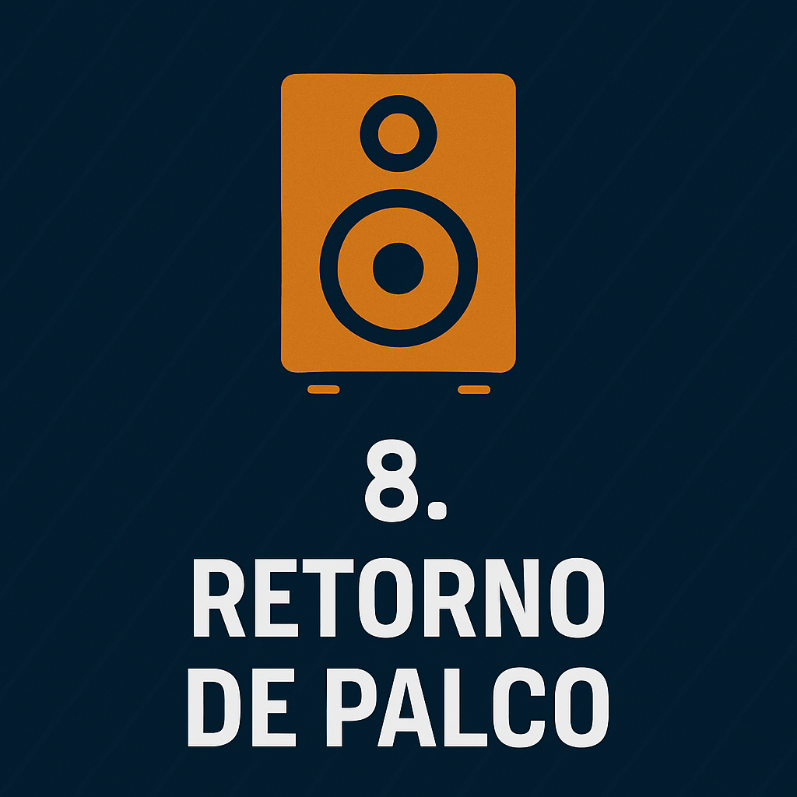

Introdução ao Áudio Básico
Aprenda o essencial sobre áudio do zero: microfones, mesas de som, equalização, retorno e muito mais com linguagem simples e direta.
1. O que é Áudio?
Áudio é o som captado, transmitido e reproduzido por equipamentos eletrônicos. Toda vez que você fala ao microfone, ouve um alto-falante ou ajusta o volume, está lidando com áudio.
Som é a vibração do ar que chega aos nossos ouvidos. Áudio é essa vibração convertida em sinal elétrico.
2. O Caminho do Som (Fluxo de Sinal)
Para entender como tudo funciona, imagine o áudio como um rio que corre de um ponto até outro. Ele segue um fluxo:
Fonte sonora → Microfone → Mesa de som → Amplificador → Alto-falantes
3. Microfones
Os microfones captam o som e transformam em sinal elétrico.
- Dinâmico: robusto, ideal para voz ao vivo e instrumentos.
- Condensador: mais sensível, ótimo para gravações (exige +48V).
Dica: Use microfone dinâmico para pregação e voz ao vivo. Evita microfonia e é mais resistente.
4. Cabos e Conectores
Tipos mais comuns:
- XLR: balanceado, usado para microfones e sinal profissional.
- P10: pode ser balanceado ou não, usado em instrumentos e retornos.
- RCA: mais comum em equipamentos domésticos.
Prefira cabos balanceados para evitar ruídos.
5. Mesa de Som
A mesa de som é o centro de controle do áudio.
- Gain: controle da entrada do sinal
- EQ: ajuste de graves, médios e agudos
- AUX: envio de sinal para retorno
- Fader: controle de volume final
- Pan: direciona o som para esquerda ou direita
Dica: O ganho controla o que entra. O fader, o que sai.
6. Equalização Básica
A equalização serve para melhorar a clareza do som. Ajustes típicos:
- Graves: cuidado com excessos — podem embolar.
- Médios: região da voz — equilíbrio é essencial.
- Agudos: trazem brilho — mas podem irritar em excesso.
7. Microfonia
Microfonia é aquele apito agudo causado quando o som volta do alto-falante ao microfone.
Como evitar:
- Mantenha o microfone longe das caixas de som
- Evite ganho excessivo
- Use retorno de forma inteligente
- Faça uma equalização consciente
8. Retorno de Palco

O retorno permite que quem está no palco se escute.
- Floor monitors: caixas voltadas para o músico/pregador.
- In-ear: retorno via fones intra-auriculares.
Configure usando os canais AUX da mesa para mixagens independentes.
9. Efeitos e Processadores de Dinâmica
Após dominar o básico, você pode explorar:
- Compressor: controla picos de volume.
- Limiter: protege contra estouros.
- Reverb e Delay: dão ambiência ao som. Use com moderação.
10. Boas Práticas
- Organize os cabos
- Teste tudo antes do evento
- Evite exageros na equalização
- Tenha uma cópia das configurações
- Grave e ouça ensaios para treinar o ouvido
Conclusão: Operar som é prática, sensibilidade e aprendizado. Comece simples, ouça com atenção e evolua com cada evento.